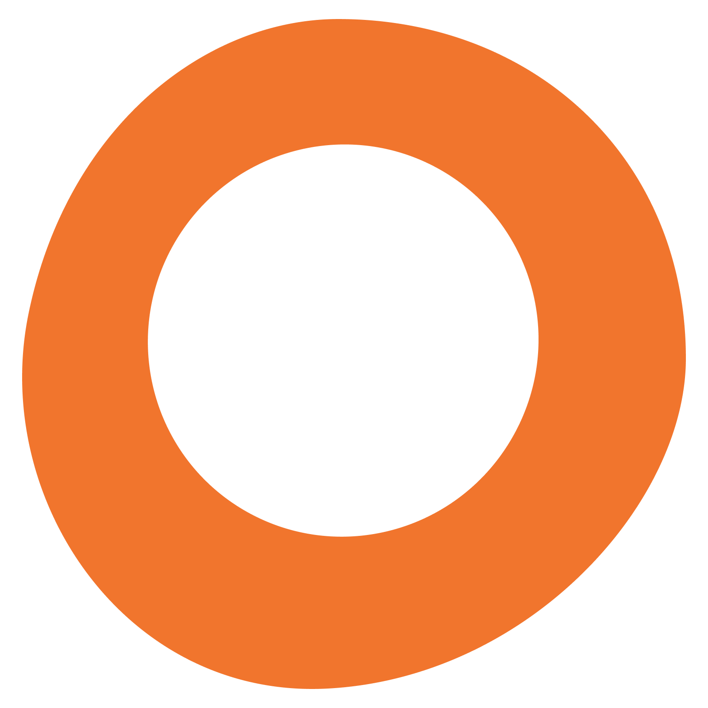
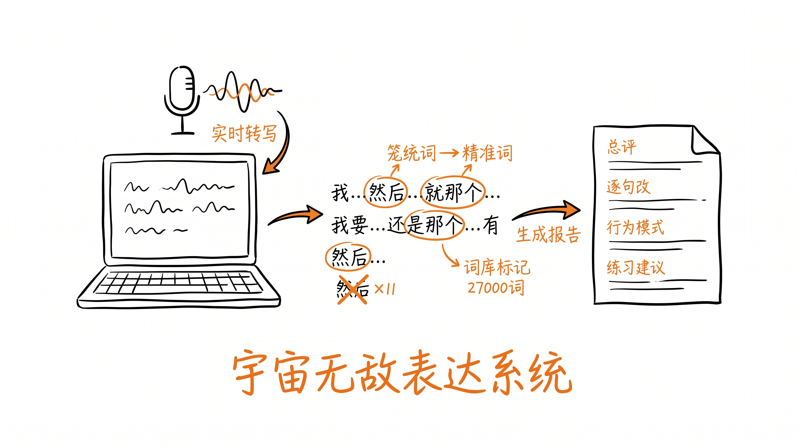

Cola Skill 分享 · 来自真实用户实践一个自媒体创作者跟Cola聊了两周，从零搭出来的本地桌面应用。没写一行代码。对着她说话，她帮你看见自己的表达问题。

Sisi，做自媒体。每周都在录口播内容。问题不是"不会说话"——她很能说。
问题是回听录音的时候发现：满屏"然后""嗯""就是"。想表达的观点绕了三圈才说到。很多词太笼统——"很好""很多""开心"——听的人get不到重点。
最难受的是：说的时候完全意识不到。等录完回听才发现。她想要的是——说话的同时就能看到自己的问题。看到了，自然就会改。
一次5分钟录音里出现了29个填充词——平均每10秒一个。"然后"×11，"嗯"×8，"就是"×6。但说的时候一点感觉都没有。
不是词汇量不够，是说话的时候缺少"镜子"。如果说的同时能看到自己在说什么、哪些词有问题——问题就会自动减少。
最开始的需求只有一句话："我想要一个实时字幕的东西，说话的时候能看到自己在说什么。"
对着麦克风讲，字幕实时出现
说完之后生成报告，告诉你哪里有问题
Cola用浏览器的Web Speech API + Groq免费API搭了一个网页版
第一版就这么简单。可以用了。
但问题来了——浏览器的语音识别要联网，中文识别率一般，说快了跟不上。
从网页版搬到本地桌面应用。语音引擎从在线换成离线。整个技术栈重搭了一遍——但我做的事情没变：聊需求。
说到"开心"，旁边弹出替换建议。说到"很多"，弹出更精准的表达。
词库是死的，但她在你说话的那一秒提醒你，效果是活的。
报告不能只是"你说了8次然后"。要能分析行为模式——什么时候开始犹豫？什么结构上总是绕弯子？
Cola从GitHub上一个4700+ stars的开源Skill仓库里选了两个能力融进去：
分析你说话的行为模式：什么时候犹豫、重复、绕圈子
分析你表达的结构：有没有说到重点、逻辑是否完整
跟Cola说一句话就行：
"帮我安装这个仓库" + 链接
把仓库链接一起发给她，剩下的交给Cola。她会自动去抓、自动安装、自动集成。
面板遮住字幕，看不到自己说的话。❌ 不行
左边统计、中间字幕、右边反馈。✓ 能用了
可以把之前录好的稿子粘进来分析。加了一键清空、保存。✓ 好用了
右栏改成AI根据上下文给建议，词库只做高亮。✓ 对了
后来还改了：
• 报告生成断了 → max_tokens 1500→4096
• Groq 403了 → 换成DeepSeek
• 加了Prompt编辑页面（自定义训练规则）
• 报告开头加了"宇宙无敌少女收到你的录音啦~~"
调试系统时不断给自己出报告，看到满屏"然后"。现在碰到需要思考的时候就停住、留白，想清楚再说下一句。
一直用语音跟Cola聊需求、让她整理框架。聊着聊着脑子里开始自动生成结构。现在跟AI还是跟观众表达，都会先搭框架再说。
做内容不是创作的第一步，是最后一步
观察 → 想法 → 实践 → 感悟 → 分发
选择任意API，几分钟搞定 ✦
设置 → 填入Key → 保存
不填也能用基础功能（离线语音+词库），只是没有AI深度分析。
"今天我想聊一下......"
她会实时转写、实时标记问题、
说完生成完整报告。